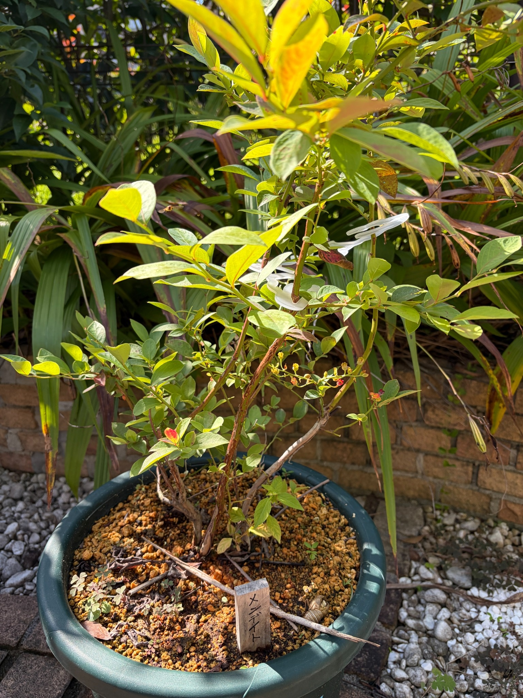

2026/10/16 メンデイト 鉢への植え付けから10か月。緑と黄色の葉に、赤い色づきも見られます
2026年10月16日。前回の9月22日から24日がたちました。
昨年12月16日に大きなスリット鉢へ植え付けたメンデイトが、ちょうど10か月を迎えました。黒い育苗ポットに入った苗を迎え、鉢へ植え付けたところから始まった記録が、初めての収穫を経て、秋の姿へとつながっています。
今年はクライマックス、プレミア、メンデイトの3品種とも実をつけ、収穫したブルーベリーをヨーグルトに混ぜておいしくいただきました。実の写真は残せませんでしたが、自分で育てた実を食べられたことは、うれしい出来事でした。
今のメンデイトには緑色や黄緑色の葉があり、その間に黄色みの強い葉や、赤く色づいた葉が混じっています。実を楽しんだ夏の後も、葉や枝を眺めながら、季節の移り変わりを感じています。
9月22日から続く、収穫後の枝葉
前回の9月22日には、鉢と株元から上へ続く枝葉を一緒に残しました。緑色や黄緑色の葉が広がり、一部には黄色みや赤褐色の斑点も見られました。
今回も、枝の各所に緑の葉が残っています。その中で、上の方の明るい黄色や、下の枝にある赤い葉が目に留まります。
9月の姿を思い浮かべると、今回の写真では黄色みが印象に残ります。ただ、日差しや葉の向き、写っている範囲にも違いがあるので、株全体が一斉に黄色く変わったというわけではありません。
緑を残す葉、黄色みのある葉、赤く色づいた葉。それぞれが混じっていることを、10月16日の姿として残しておきたいと思います。
鉢への植え付けから、ちょうど10か月
メンデイトを購入したのは、2025年12月13日です。クライマックス、プレミアとともに迎え、3日後の12月16日に植え付けました。
クライマックスとプレミアは地植えにし、メンデイトは濃緑色のスリット鉢で育てることにしました。鉢には鹿沼土が広がり、手前には「メンデイト」と書いた木製の名札を立てました。
植え付けた頃は、赤色や桃色、橙色、黄色の葉が印象に残る姿でした。その後、夏には緑の枝葉を見せ、今年は実を収穫する楽しみも味わえました。
そして今、再び葉の色の違いが目に入る季節になりました。同じ鉢と名札を眺めていると、植え付けた日からの時間がつながって感じられます。
10か月という区切りを迎え、実を採れたことだけでなく、その前後の姿も残してこられたことをうれしく思います。

緑色や黄緑色の葉が残っています
枝には、落ち着いた緑色の葉と、明るい黄緑色の葉がついています。
株の中央や左右へ伸びる枝を見ると、緑を残した葉が続いています。葉が重なっているところもあれば、間隔が空いて細い枝が見えるところもあります。
葉の大きさにも違いがあり、比較的大きな葉のそばに、小さな葉がまとまっている部分があります。枝先へ向かう葉の並びをたどると、一本の枝にもさまざまな表情があります。
黄色や赤の葉が目を引く一方で、緑の葉もまだ残っています。秋の姿を一色で表すより、いくつもの色が混じる株として眺めておきたいです。
上の方では、黄色みのある葉が目を引きます
写真の上側には、明るい黄色や黄緑色に見える葉があります。日を受けて光が透けるように見え、周りの濃い緑の中で目立っています。
一枚の葉の中でも色が均一ではなく、黄色い部分と緑を残した部分が混じっています。赤みや褐色の細かな点が見える葉もあります。
光に照らされた葉の明るさはきれいですが、明るく写っていることと、葉そのものの黄ばみは分けて眺めたいところです。同じ株でも、陰になる葉は落ち着いた緑に見えます。
黄色みのある葉がこの後どんな色になり、どのくらい枝に残るのか。冬へ向かう変化を、続けて見ていきたいと思います。
下の枝には、赤く色づいた葉もあります
株の下の方、左寄りの枝には、赤い色の入った小さな葉があります。
周囲には緑色の葉があるため、その赤さがよく目に入ります。葉全体が同じ赤ではなく、黄色みのある縁や緑を残す部分も見え、小さな一枚の中に色の違いがあります。
株全体が赤くなった姿ではありませんが、こうして一部の葉に赤みが見えると、秋のメンデイトを眺める楽しみが増えます。
昨年12月にも色づいた葉が残っていました。今年は夏の緑の姿も見てきたので、その間をつなぐように葉色を追えることがうれしいです。
これからほかの葉にも赤みが出るのか、それとも黄色みのある姿が続くのか。一枚の葉の色だけで先を決めず、株全体を見守っていきます。
赤褐色の斑点や、部分的な変色もあります
葉の一部には、赤褐色や暗い色の細かな斑点があります。中央から右側には、赤褐色の部分が目立つ葉も見えます。
葉先や縁の色が変わったものもあり、すべての葉が傷みのない状態にそろっているわけではありません。
9月5日、9月22日の記録でも、葉の斑点や部分的な変色に目を向けました。今回も気になるところはありますが、同じ葉を一枚ずつ追っているわけではないので、傷みがどのくらい進んだかまでは分かりません。
赤や黄色の葉には季節を感じますが、斑点や褐色の部分まで、すべてをきれいな色づきとして扱うことはできません。
葉色を楽しみながらも、気になる葉の状態はそのまま残しておきたいです。見た目だけで原因を決めず、その後の葉や枝の変化と合わせて眺めていきます。
葉の表と裏で、色の印象が変わります
枝につく葉は、それぞれ違う方向を向いています。
広い面がこちらを向く葉もあれば、横向きになって細く見える葉や、裏側が見える葉もあります。裏側を向いた葉は白っぽい緑色に見え、日を受けた黄色い葉とは違う明るさがあります。
同じ枝でも葉の向きによって明暗ができ、その重なりが株の奥行きにつながっています。
手前の大きな葉に目を向けた後で、その奥の小さな葉を見ると、また違った緑が見えてきます。果実の時期が過ぎても、こうした葉の違いを眺める楽しみがあります。
株元から立ち上がる、褐色の枝
鉢の中央付近からは、複数の褐色の枝が立ち上がっています。
中央では赤褐色の枝が上へ伸び、右側には灰褐色に見える枝が斜めに続いています。左側にも枝が分かれ、一本ずつ違う方向へ広がっています。
枝の表面には縦方向の筋や凹凸が見え、色にも濃淡があります。その先には細い枝と葉がつながり、株元から枝先へ向かう形をたどれます。
葉がついている部分だけでなく、枝が見えている部分にも、この株らしい姿があります。上へ伸びる枝と左右へ広がる枝が組み合わさって、鉢の上に枝葉を広げています。
今回も枝の先までがすべて写っているわけではありませんが、株元から続く骨組みを残しておきたいと思います。
枝の周りには、白いクリップ状のものが見えます
株の中央付近には、白いクリップ状のものが重なって見えます。
褐色の枝や緑の葉の間で白い色が目立ち、枝の位置をたどる目印になっています。前回の写真にも淡い色の留め具が見えましたが、今回は白い部分の形がよく分かります。
枝と周囲のものがどこで重なっているかを眺めると、葉だけを見ていたときとは違う形が見えてきます。
これからも枝葉の広がりとともに、こうした枝の近くの様子にも目を向けていきたいと思います。
細い枝には、小さな粒状の部分が並んでいます
中央より少し下の右側には、細い枝に小さな粒状の部分が並んでいるところがあります。黄緑色や黄色みのあるもの、その先が赤く見えるものもあります。
前回も、細い枝にある小さなまとまりに目が留まりました。今回も大きな葉の間から、こうした細かな部分が見えています。
今は花芽や果実だと決めて数えるより、形や色がこの先どのように変わるかを見ていきたいです。
今年の収穫を楽しめたことで、枝の小さな部分にも以前より関心が向きます。次の季節につながる変化を、少しずつ残していけたらと思います。
鹿沼土の上には、落ち葉や細い枝があります
鉢の表面には、黄土色の鹿沼土が広がっています。
その上には枯れ葉や細い枝があり、ところどころに小さな草も生えています。手前には細長い枝が横たわり、株元の周りには落ち葉が重なっています。
前回も鹿沼土の上に落ち葉や小さな植物が見られました。今回も、季節を過ごしてきた鉢の表情があります。
周りにはほかの植物もあるので、鉢の上にあるものを、すべてメンデイトから落ちた葉や枝として考えることはできません。それでも、鹿沼土の粒と落ち葉、株元の枝が一緒に見える姿には、植え付けた当日とは違う時間の積み重なりを感じます。
地上の葉色に加えて、こうした足元の様子も記録しておきたいと思います。
木製の名札と、同じ鉢で過ごした季節
手前には、「メンデイト」と書いた木製の名札があります。
昨年12月の植え付け、9月5日、9月22日、そして今回。葉の色や写す角度が変わっても、この名札と濃緑色の鉢が、同じ株の記録をつないでくれます。
苗を迎えた頃は、まだ自分の庭でどんな実が採れるのかを楽しみにしていました。今年はその実を食べ、今は収穫後の葉や枝を眺めています。
鉢の中で過ごした10か月には、写真に残した日以外にも季節の変化がありました。今の姿を残すことで、後から振り返る楽しみも増えていきます。
同じ日のクライマックス、プレミアと見比べて
同じ10月16日のクライマックスでは、桃色や赤紫色の葉が目を引きました。プレミアでは、緑色や黄緑色の葉に、黄色みや赤みが混じっていました。
メンデイトも、緑色や黄緑色を残しながら、明るい黄色の葉や、一部の赤い葉を見せています。
同じ日に迎えた3品種でも、秋の葉色の印象はそれぞれ違います。実を収穫する楽しみに加えて、こうした季節の姿を見比べる楽しみがあります。
ただ、クライマックスとプレミアは地植え、メンデイトは鉢植えです。日差しや撮影する距離も違うので、葉色の印象だけで、品種ごとの色づく早さや育ち方の優劣を決めることはできません。
それぞれの株が、この日にどんな姿を見せていたか。一緒に育てる楽しみを感じながら、一株ずつの記録を続けていきたいと思います。
初めての収穫を楽しんだ年の、10か月目の姿
購入した苗を大きなスリット鉢へ植え付けてから、ちょうど10か月がたちました。
今年はメンデイトも実をつけ、クライマックス、プレミアとともに収穫を楽しませてくれました。ヨーグルトに混ぜて食べたことが、育て始めた年のうれしい思い出になっています。
実を採った後も、9月5日、9月22日、10月16日と、枝葉の姿をつないでこられました。緑色の葉、黄色みのある葉、赤く色づいた葉、斑点や変色のある葉。そのどれもが、今のメンデイトの姿です。
これから葉色がどのように変わり、枝にどんな葉が残るのか。昨年の冬の姿を思い浮かべながら、この鉢で迎える次の季節も見守っていきます。
2026年10月16日。スリット鉢への植え付けから10か月を迎えたメンデイトを、収穫後の秋の姿として残します。